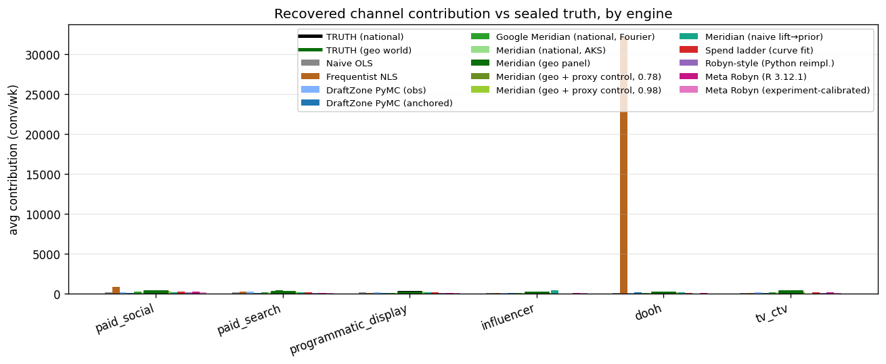

| engine | world | type | R² | MAE/ch ↓ | media bias | CIs hit |
|---|---|---|---|---|---|---|
| Google Meridian (national, Fourier) | nat'l | Bayesian | 0.821 | 24 | -12% | 6/6 |
| Spend ladder (curve fit) | nat'l | Bayesian | — | 25 | -14% | 6/6 |
| DraftZone PyMC (obs) | nat'l | Bayesian | 0.823 | 44 | -2% | 6/6 |
| Meridian (national, AKS) | nat'l | Bayesian | 0.899 | 47 | -26% | 6/6 |
| Meta Robyn (R 3.12.1) | nat'l | point | 0.859 | 56 | -35% | — |
| Naive OLS | nat'l | point | 0.649 | 59 | -23% | — |
| Meridian (geo + proxy control, 0.98) | geo | Bayesian | 0.963 | 91 | +68% | 1/6 |
| Meta Robyn (experiment-calibrated) | nat'l | point | 0.837 | 91 | -57% | — |
| Robyn-style (Python reimpl.) | nat'l | point | 0.843 | 91 | -57% | — |
| DraftZone PyMC (anchored) | nat'l | Bayesian | 0.799 | 101 | -48% | 5/6 |
| Meridian (naive lift→prior) | nat'l | Bayesian | 0.845 | 150 | +19% | 3/6 |
| Meridian (geo + proxy control, 0.78) | geo | Bayesian | 0.941 | 153 | +114% | 0/6 |
| Meridian (geo panel) | geo | Bayesian | 0.936 | 164 | +123% | 0/6 |
| Frequentist NLS | nat'l | point | 0.860 | 5478 | +3378% | — |
Meta Robyn — the method, two implementations. the real Meta Robyn R package (MAE 56, bias -35%, DECOMP.RSSD 0.011) and our Python reimplementation of its method (MAE 91, bias -57%). Robyn is frequentist: ridge regression on a Prophet trend/season decomposition, with Nevergrad searching adstock/Hill hyperparameters against two objectives — fit (NRMSE) and DECOMP.RSSD, its signature regulariser pulling each channel's effect share toward its spend share. The real Robyn shows a telling split-vs-level pattern: its channel shares are excellent (DECOMP.RSSD 0.011 — effect shares hug spend shares, which here also match truth), but it under-credits the media level (bias -35%) because Prophet's flexible trend soaks up the seasonal-confounded variance into the baseline. Our leaner reimplementation (fixed linear trend + Fourier season, not Prophet) leaves more for media and lands closer (-57% bias, MAE 91) — same method, different baseline flexibility, different answer. Experiment calibration (Robyn's
calibration_input, anchored here to the spend-ladder readout — the project's confound-immune signal) targets exactly that level gap: it moves Robyn to MAE 91, bias -57% (lifting the media level vs -35% uncalibrated) — the one lever that fixes the level honestly rather than by hand-picking a Pareto model. DECOMP.RSSD is itself a prior: here channel ROIs are similar so share-matching helps the split, but on a mix with one very high- or low-ROI channel it would mislead. And like every engine here Robyn has no experiment, so it cannot escape the confound better than its baseline controls allow — the throughline of the whole leaderboard. (Run at Robyn's full converged config, 2000×5 iterations×trials, with the balanced-knee model auto-selected; a practitioner picking a higher-media model off the Pareto front by hand could lift the level further.)Meridian across the control-quality spectrum. Same scale-corrected ROI prior: national + Fourier controls (MAE 24); national + Meridian's own AKS knots, no Fourier (MAE 47); the hardened multi-geo panel (MAE 164); that panel + an imperfect demand proxy (MAE 153); + a near-perfect demand proxy (MAE 91). The geo panel is Meridian's home turf — spend varies across geos within a week, cross-sectional identification the national series lacks — but this panel is hardened: a latent geo×time demand factor both lifts non-media conversions and draws targeted spend (realized corr(spend, demand) +0.78), the geo analogue of the spend↔season confound, graded against the geo world's own answer key. With no control for it, geo Meridian blows up to MAE 164 (media bias +123%, 0/6 CIs) — high R² and confidently wrong on every channel, crediting the demand-driven conversions to the spend that chases them. An imperfect demand-proxy control (fidelity 0.79) barely helps — MAE 153, bias +114%, only ~7% of the error bought back: the confounder's pull on conversions rivals the entire media signal, so what the proxy MISSES still tracks spend and keeps over-crediting. Even a near-perfect proxy (fidelity 0.98) only claws back about half — MAE 91, bias still +68%, 1/6 CIs (~45% of the error bought back) — because the residual it misses still tracks the targeted spend. Control quality sets the ceiling, but a realistic proxy lives down near the useless end, and even the unrealistic one doesn't fully repair it. National AKS stays best-calibrated (MAE 47, bias -26%, 6/6 CIs). The throughline: more data (geo cross-section) and better controls help, but you can never tell from fit alone whether your proxy was good enough — only a randomized experiment breaks a confounder you can't see. That is why this project triangulates MMM with geo tests instead of trusting any single fit.
The spend ladder is the cure for the saturated channels (MAE 25/ch, 6/6 CIs). Instead of feeding ONE lift into a prior, it runs several cells per channel at different spend levels — including cells below current spend — and fits the response curve through them. The bracketing turns the read into an interpolation at the operating point, so it right-sizes the saturated channels a single secant mis-credits (paid_social, paid_search). It is also the most expensive option. See the curves and the honest cost/time analysis →
Naive lift-calibration mis-sets channels (media bias +19%, MAE 150/ch). Feeding one geo-lift number into a model's marginal prior is fragile for two reasons. (1) Operating point: if the test markets aren't scale-consistent replicas of the national channel, the lift is measured at the wrong point and grossly over-credits (+113% on half-sat geos here; ~+20% once the geos are centered on national). (2) Secant bias: a detectable lift needs a big spend bump, so it measures the average response over that jump, not the marginal — understating saturated channels (flat region) and overstating headroom ones (convex region), shifting credit from saturated to unsaturated channels. The fix isn't a scalar prior: feed the lift at its measured exposure levels and let the model's curve translate it (our DiD-likelihood anchor; Meridian's
roi_calibration_period), or run a spend ladder to trace the curve. You can't just hand a lift test to an MMM.All engines share the same Fourier-seasonality control set and public data — no engine reads the answer key. "media bias" is total recovered media vs truth (+ = over-credit). Configuration (prior scale, seasonality handling) dominates engine choice: see the run reports for how the same gremlins — confound, prior scale, marginal-vs-average — drive every engine.